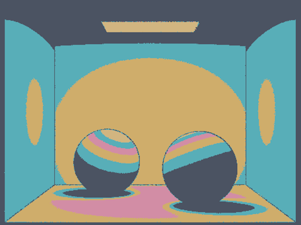

For our final project, we implemented non-photorealistic rendering in the pop art style. In order to achieve this, we need to be able to detect forms within an image to outline them and detect distinct levels of light in the image in order to create a color block effect. We need to make sure that the resulting image still clearly represents the original image, while still being stylized. Our implementation can be seen as the culmination of four features: edge detection, cel shading, corner detection, and user input. The edge and corner detection algorithms are used to create dark outlines to depict shapes, while cel shading maps different levels of radiance in the image to several colors. The user image feature makes this rendering user-friendly, allowing one to indicate whether to use this render and which color scheme to use.
Final Deliverables
Technical Approach
Edge Detection
We used a reference on edge detection with ray tracing for inspiration on implementing edge detection. From this paper, we got the idea of shooting an additional parallel ray at a small offset from the original ray. To cater this to our project code, we set the x,y direction (in image space) of the new ray to the x,y direction of the original camera ray (in image space) plus a small float between 0 and 1, and shot the ray through the scene to get its intersection information. To determine edges, we used a heuristic in the paper where we calculated the difference in intersection times (depth) between the 2 rays, and set the color black for ray depth differences larger than a maximum threshold. We adjusted our threshold depth difference value to produce our desired edge thickness.
|
|
Cel Shading
We used a reference on edge detection with ray tracing for inspiration on impIn order to implement cel shading with harsh shadows, we came up with the idea of post-processing the image and “rounding” or truncating every color to the nearest of some chosen set of colors. To do this, we tracked down the last step before the data from raytracing was converted to color—in image.h—and added a threshold system. If the calculated irradiance in the image buffer was greater than a certain value (which we found by tweaking values until they produced visually pleasing results for various models) it would be overwritten with a color of our choice. In order to smooth the color boundaries and achieve a better pop art effect, we only used direct illumination to produce our underlying image.
|
|
Corner Detection
Our corner detection algorithm was created from inspiration from the edge detection algorithm. Since we know that corners are defined by two planes forming a 90 degree angle, we want to see at any given point, if it lies at such an intersection. To do this, at each point in the image space, we fire an additional offset camera ray to the random offset camera ray already fired for edge detection near that point. If both camera rays intersect with the image, and the normal rays at their intersections are perpendicular, then the point lies in a corner. To account for the randomness of the two camera rays, we create a threshold for the angle between the two normal rays to not just be exactly 90 degrees. Basically, if we were to shoot out a ray from one side of a corner and another ray from the other side, we would expect them to be perpendicular. This method of firing two slightly offset camera rays and checking the angle between their normal rays achieves the same purpose. For each point that we have detected does indeed lie in a corner, we color that pixel black to create the outline along the corner.
|
|
User Input
To allow our non-photorealistic rendering to be used easily, we integrated it into the already existing pathtracer executable’s design. In order to render an image with the pop art effect, one would add a -C flag to their argument followed by an integer from 0-5. A value of 0 would indicate that the NPR shouldn’t be run (this is also the default value if -C isn’t included), and the values 1-4 map to four distinct color schemes.
Challenges and Problems
Sobel Edge Detection
We initially tried to implement edge detection using Sobel Edge detection and convolution. However, when we attempted to implement it using the project 3 base code, we struggled a lot with the edge handling. We put our code in raytrace_tile in raytraced_renderer.cpp and thought we could deal with some of the edge issues by extending pass the tile. However, we couldn't seem to get this to work, and the result seemed rather noisy. As a result, we reevaluated our approach and decided to attempt ray tracing edge detection instead.

|
Cel Shading
Our main challenge with implementing cel shading was digesting the project 3 code that we hadn’t touched before, and figuring out where to put our threshold/mapping logic. We spent a long time testing out different places to modify the code, but realized that due to the way the project used tiles to speed up rendering, we would have to find a place to deal directly with each individual pixel’s color. Eventually, we figured out that this could be achieved during the process of writing the image buffer to color.
Another issue we faced was poor color blocking; we wanted our color thresholds to be clean, with no gradients or noise with different colored pixels dotting an otherwise relatively constant area. We considered implementing a “smart” blocking method that would adjust any pixels that differed from those surrounding them, but found a simple workaround instead: only using direct illumination. When using global illumination, shadows were not consistently dark enough to produce good color blocking, and would have very noisy results. Since we were not trying to achieve realistic lighting anyway, we realized that direct illumination would produce a better underlying image and get rid of the majority of the noise we were struggling with.
One attempted way to achieve cel-shading was by selecting the appropriate color for each pixel when ray tracing - mapping the intensity of the light at that position to one of the pop art colors. We calculated intensity by finding the dot product between the light direction and normal ray coming from that point in the scene, and use create buckets of light intensities in order to assign new colors. This ended up having a lot of noise. Also, the thresholds for the buckets were hard to find, as the intensities ranged from 0 to 1 but were heavily skewed to the 0-side.

|
Lessons Learned
We learned that we could reuse the ray system that was already implemented for more than just strictly ray tracing. We were able to use the camera ray and intersection functionality to implement both object edge detection and corner edge detection; instead of tracing rays to calculate irradiance, we traced offset rays to see if there was a depth difference (indicating an object edge) or if the offset rays had perpendicular normals (indicating a wall corner).
Another important realization was that taking away some of our existing project 3 code was valid. At first we were stuck in the mindset that we could only build on top of project 3, and that nothing should be removed/dialed down. However, because our project was to create non-photorealistic rendering, there was no need to use global illumination, a technique that exists to create more realistic renders. Taking this away from our project helped us get a lot closer to our end goal, and helped us realize that the true form of images are defined by simplicity. Many concepts we learn in class allow for images to look more and more realistic, but in this project, when we actually want to create a stylistically simplified image, we are able to see what really is needed to depict the bare bones of an image and what is unnecessary.
Final Results: Pop Art!
Spheres
|
|
|
|
|

|
Bunnies
|
|
|
|
|
|
Dragons
|
|
|
Something cool to note here is that our edge detection algorithm worked for outlining inside the dragon's mouth! We can see a black line along the top teeth closest to us, helping define the image.
References
- https://www.cs.rpi.edu/~cutler/classes/advancedgraphics/S17/final_projects/amy_toshi.pdf
Team Contributions
- Alice: Implemented ray tracing edge detection, attempted Sobel edge detection and convolution, participated in initial research/searching for important resources
- Christine: Implemented ray tracing edge detection, attempted Sobel edge detection and convolution, searched for cel shading/edge detection references
- Grace: Implemented corner detection and user input features, helped with cel shading and combining edge detection and cel shading code.
- Seohyun: Implemented cel shading, combined object edge detection and cel shading code, helped come up with corner detection method
Milestone
Current Progress
For edge detection, we first tried to implement edge detection by applying a post-processing edge detection algorithm with Sobel edge detection and convolution, but didn’t get the results we were looking for. When we rendered the image, the image noise became amplified, there were unnecessary edges made incorrectly, and we realized that the corners of each tile-sized chunk of the image (edge cases) were difficult to handle.
Instead, we started on distributed ray tracing edge detection by creating an additional edge ray per camera ray. Then, we detected edges and colored them black based on the differences in depth (time of object intersection) between the edge ray and camera ray. We set an arbitrary threshold for the maximum depth difference between the 2 rays and changed it to match our desired edge thickness. We were able to implement this edge detection algorithm, but we plan to refine it by implementing the more accurate slope heuristic for determining edges, and possibly shoot out multiple edge rays and take the average of depth differences for a more accurate depth measurement.
In addition, we’re going to continue working on the shading part. For this part, we find a color palette of 5 colors of different tones. We also find the range of colors in the image and separate it into 5 bins, each representing how light or dark the pixel is. For each pixel, we would map the original color to the closest one of the 5 colors, in order to create a cartoon effect. We processed these changes after finding the radiances for the image and populating the sample buffer. We used thresholds right before converting our radiances to RGB color values in order to create harsh shading.
Reflecting on Progress
In reference to our previous plan, we may shorten the scope of the project by focusing on completing one non-realistic photo rendering style rather than two like we planned. If we finish this one quickly, we may continue with the second one, but we plan to recalibrate later, and would prioritize making one rendering more robust rather than merely completing two. We would rather add features such as user color picking for toon shading than begin a second NPR without enough time. We are on track with the schedule that we outlined in our project proposal.
Preliminary Results
Edge Detection
|
|
|
Toon Shading
|
|
|
Video
Slides
Proposal
Problem Description
Why NPR?
Photorealistic rendering is not always the goal; for example, the ideas document mentioned that architectural and blueprint designs require structural clarity. In these situations, we need to clearly see where edges are and how curves fall, etc., which can be difficult if we have shadows and colors that obstruct or skew our view of the structure. Another example could be for animation or art; photorealistically rendered hair would likely look odd on a cartoon character mesh.
How?
We are currently intending on achieving 2 different styles—one reminiscent of cel-shading, and another more artistic/illustrated one. For the cel-shading style, we are thinking of implementing irradiance thresholds; if the calculated irradiance at the surface is above/below a certain threshold, it will be mapped directly to one of the colors we have chosen for the style. For the more illustrated style, we may have to use some element of randomness to emulate a sketchy style. Our current ideas revolve around using randomness and larger chunks of the surface to fill in “pencil lines” for a sketchier style, or another threshold-based design for watercolor, with darkness and randomness on the edges to imitate watercolor bleeding.
Goals and Deliverables
What we plan to deliver

|
We plan to deliver the ability to render two types of non-photorealistic rendering, one that is cel-shading style such as "hope" or "jaipur noire" and one more illustration-style such as "notepad+" or "scribbles" as shown above.
In order to measure the quality of this system, we will aim to (1) keep the image still representative as it would be with a normal path tracer, such that there is no question what the image is depicting, and (2) create a stylized and aesthetic render, which will be a more subjective measure but very relevant to the aim of our project.
Some questions to answer
Where are contours on the image and how are they found? (“Contours” would refer to the boundary of different colors in the NPR) Similarly, how many boundaries (and hence colors) do we need to produce an aesthetically pleasing render that doesn't lose the original mesh structure? How do NPRs compare to photorealistic rendering in terms of speed?
What we hope to deliver
Given adequate time, we want to allow the user to select which color their rendering is based off of and have the entire rendering’s color scheme be based off of that chosen color. Another additional feature could be an additional NPR, especially a more complicated one if time allows, like making the rendering look like paint. This would be more complex as we would need to differentiate what colors different paint strokes would be, along with the size of the strokes.
Schedule
Pre-Milestone
Week 1: Research and inspect existing Pathtracer code to figure out what we can keep and what we must change. For example, which functions do we need to modify to implement cel-shading boundaries? Come up with a more concrete game plan with specific coding tasks. Week 2: Start implementing cel-shading and have something presentable by the milestone.
Post-Milestone
Week 3: Finish implementing cel-shading if necessary. Implement illustrated style rendering. Week 4: Wrap up two rendering styles and add extra content (user choosing colors, different style, etc) if time allows. Prepare presentation.
Resources
We will use our existing code from project 3-1 and 3-2 to get a working implementation of a ray tracer and ray intersection to simulate light transportation. To render different styles, we may also take inspiration from our implementations of the BSDF functions to implement the shaders/distribution functions.
We will probably also render our own .dae files, and will follow the project 2 extra credit guidelines: https://cs184.eecs.berkeley.edu/sp21/docs/proj2
Paper on NPR course:
- https://diglib.eg.org/xmlui/bitstream/handle/10.2312/eged20201028/009-016.pdf?sequence=1
Tone Shading
- Different tone-based shading, relevant parts of the doc here: https://mrl.cs.nyu.edu/publications/npr-course1999/npr99.pdf (pg 89-92)
- Cel-shading/Toon shading abstract: https://www.cs.rpi.edu/~cutler/classes/advancedgraphics/S17/final_projects/amy_toshi.pdf
- Outlines steps we should take to implement toon shading: (p43-end) https://inworks.ucdenver.edu/jkb/iwks3400/Notes/IntroTo3D-Day4.pdf
- More steps on toon shading: http://rbwhitaker.wikidot.com/toon-shader
Hatching
- https://citeseerx.ist.psu.edu/viewdoc/download?doi=10.1.1.175.2191&rep=rep1&type=pdf (p21-23)